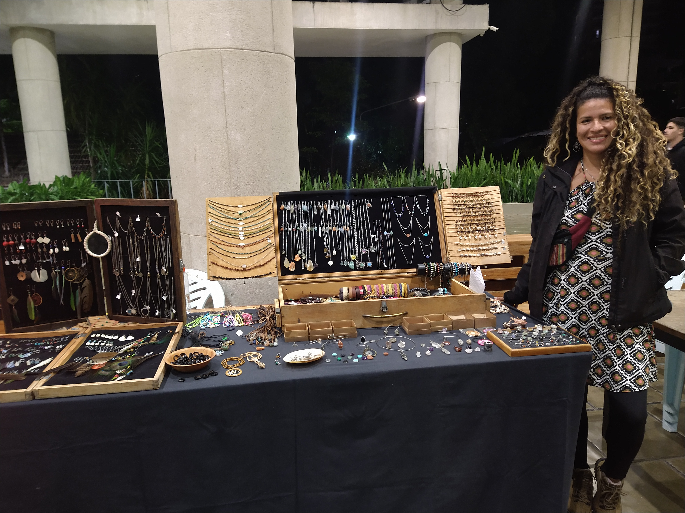

MADELINE FIGUEROA
Sobre mim
Nasci em Caracas- Venezuela no 1989. Moro no Rio de Janeiro desde 2014, sou artesa de professao e mae da tywa
Aquilo que AMO de Fazer:
- Viajar
- Artesanato
- Capoeira
- Aprender todo relacionado ao marketin digital e emprendedorismo
- Aprender todo relacionado com TI
- Aulas de artesanatos

PARA CONHECER UM POUCO MAIS SOBRE MIM
LOJA ONLINE
LOJA FISICA
COMO APIOAR EMPRENDEDORISMO FEMENINO:
- Apoie negócios pertencentes a mulheres perto de você.
- Ajude a movimentar as redes sociais.
- Comentar coisas e ideias positivas.
- Indicar negócio para amigos e familiares.